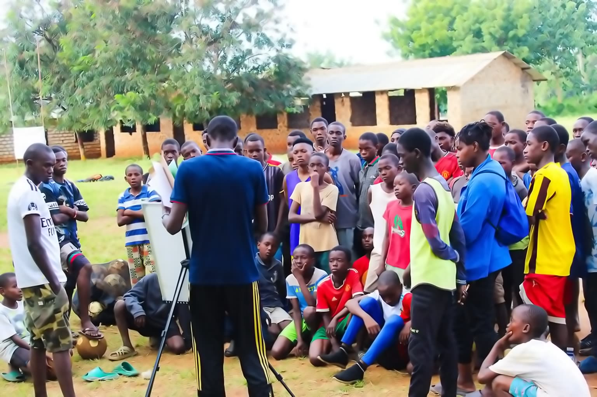
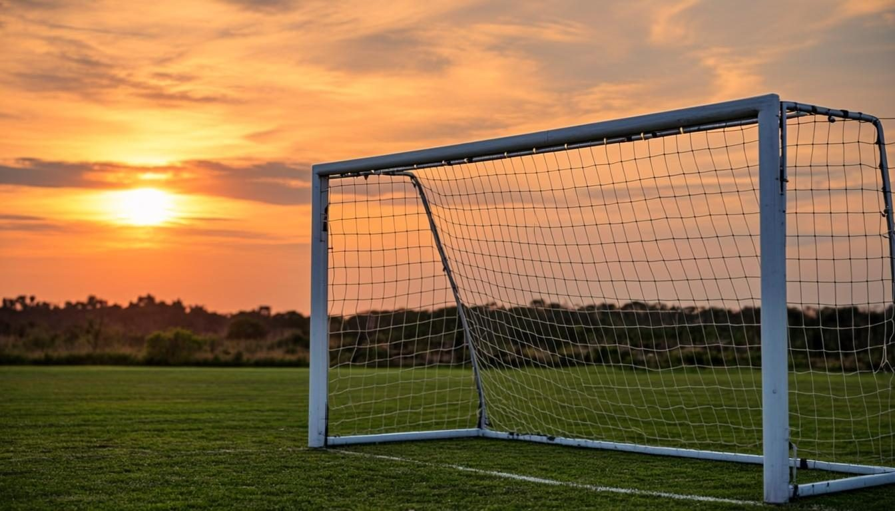

From the Chairman
"We are building an institution that we hope can serve young people for generations."
Football became our platform — but our ambition has always been much greater than football.

Founder & Chairman · Est. 2020
A message from Dr. Stephen Abuor — why Sporting Pearls exists, what we are building, and the invitation to build it with us.
From the Chairman
Football became our platform — but our ambition has always been much greater than football.
Investing in Young People. Building a Legacy Through Football.
Dear Friends, Partners, Sponsors and Development Partners,
Welcome to Sporting Pearls Football Academy.
When Sporting Pearls was established in 2020, we began with a simple belief:
Football became our platform — but our ambition has always been much greater than football.
Today, we are building Sporting Pearls into a long-term community football institution where talent development, education, character, leadership and opportunity come together.
Our vision is simple: Develop Talent. Build Character. Transform Lives.
Why Sporting Pearls Matters
Across our communities, there are talented young people with enormous potential. Some have the ability to become outstanding footballers. Others may discover their future as coaches, teachers, entrepreneurs, administrators, professionals or community leaders.
But talent alone is not enough. Young people need opportunity, mentorship, structure, safe environments, quality coaching and people willing to invest in their potential.
That is where Sporting Pearls comes in. We want to build an environment where a young person can walk onto a football pitch and discover possibilities they may never have imagined.
We Are Not Building Just Another Football Team
Our ambition is to build an institution. An institution with:
We are deliberately building systems that can survive beyond individual players, coaches and leaders. Because we want Sporting Pearls to serve generations, not just one season.
This Is Where Partners Come In
We are inviting organizations and individuals who share our belief that investing in young people is investing in the future. Your support can help us create opportunities that would otherwise remain out of reach. Investment can contribute toward:
Your Investment Can Have a Multiplier Effect
A partnership can help create:
That is the opportunity we want to build together.
We Want Partners, Not Just Sponsors
We are not looking only for organizations that want visibility. We are looking for partners who want to be part of a story.
A partnership with Sporting Pearls can potentially provide opportunities for organizations to:
Our objective is to create partnerships where Sporting Pearls grows and our partners also create meaningful value.
Accountability Matters
We understand that sponsorship is not simply a donation. It is a responsibility. Partners deserve to know how their support is being used and what it is helping to achieve.
As Sporting Pearls develops, we are committed to strengthening:
Our 100-Year Question
There is one question that increasingly guides our decisions:
That question changes the way we think about everything. We don't want to build something that depends on one person. We want to build systems, culture, leadership and institutional memory that can be passed from one generation to another.
Imagine a child who joins Sporting Pearls today returning twenty or thirty years from now as a coach, mentor, sponsor or leader. That is the future we are trying to create.
The Investment Is Bigger Than Football
When you invest in Sporting Pearls, you are helping us create opportunities for young people to:
An Invitation to Partner With Us
We are at an important stage in the Sporting Pearls journey. The foundation is being built. The vision is becoming clearer. The systems are being developed. And the opportunity for strategic partners is now.
We invite companies, foundations, NGOs, development organizations, football institutions, philanthropists and individuals who share our vision to join us. Whether your contribution is financial, technical, equipment-based, educational or professional, there is a place for you in this journey.
Let's Build Something That Outlives Us
I believe the greatest measure of our success will not be the number of trophies displayed in a cabinet. It will be the number of young people whose lives became better because Sporting Pearls existed.
It will be the player who discovered confidence. The girl who found her voice. The coach who discovered a career. The young person who stayed committed to education. The former player who returned to mentor another generation. And ultimately, the community that became stronger because we invested in its young people.
That is the Sporting Pearls vision. That is the legacy we are building. And we invite you to build it with us.
With commitment,
Developing Talent. Building Character. Transforming Lives Through Football.

01 · The Multiplier Effect
Your partnership can become generations of impact.

Whether your contribution is financial, technical, equipment-based, educational or professional — there is a place for you in this journey.